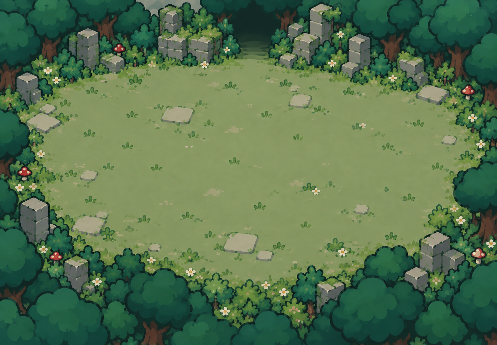

美术资源工坊
D 画风 · 与可玩版本共用同一套 PNG 图集
载入图集…
怪物 · 八方向
哥布林 / 蘑菇暴徒：每类 8 方向 × 4 个关键姿态。两帧步态、蓄力与出手；脚点统一，武器留出安全边距。
战斗特效
每组 4 个绘制阶段：剑弧、旋风、冰霜、爆破、命中、尘雾。游戏按实际动作时间播放。
弹道、预警与玩家标记
场景物件
技能与系统图标
界面皮肤
面板、选中卡片、按钮、禁用态、技能槽、头像框与数值条。界面文字与实时进度独立绘制。
林间遗迹

D 画风 · 与可玩版本共用同一套 PNG 图集
载入图集…
哥布林 / 蘑菇暴徒：每类 8 方向 × 4 个关键姿态。两帧步态、蓄力与出手；脚点统一，武器留出安全边距。
每组 4 个绘制阶段：剑弧、旋风、冰霜、爆破、命中、尘雾。游戏按实际动作时间播放。
面板、选中卡片、按钮、禁用态、技能槽、头像框与数值条。界面文字与实时进度独立绘制。
